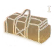

Electronic Sensors
Kur rasti Electronic Sensors MW4 DMZ Hajin žemėlapyje: konteineriai ir dažnis, vietos, kaip gauti, 3D spausdintuvo receptas, kam naudojamas.
Kur rasti
- Konteineriai
- Server Blade · 1 iš 5
Computer · 1 iš 5
Gaming Computer · 1 iš 7 - Kaip
- Elektronikos krepšiai; komerciniai pastatai.
Vietos 5
- D7Imjin Farmland1 iš 8
- C2Hanrim Village1 iš 9
- H7Construction Zone1 iš 9
- B5Chang-san Air Base
- G7Wolves Stadium
Iškrenta iš
Kaip pagaminti
Atspausdink bazės 3D Printer su šiomis medžiagomis.
Kam reikalingas
 Advanced UAVFire Support×5
Advanced UAVFire Support×5 CrossfireFire Support×5
CrossfireFire Support×5 Elite Night Vision GogglesGear×5
Elite Night Vision GogglesGear×5 Recon DroneField Upgrades×3
Recon DroneField Upgrades×3 Spotter ScopeTacticals×5
Spotter ScopeTacticals×5
Stash Item Upgrade IUpgrades×10 UAVFire Support×5
UAVFire Support×5- Vendor Item Upgrade IUpgrades×20
Žiūrėk žemėlapyje DMZ Tactical programoje